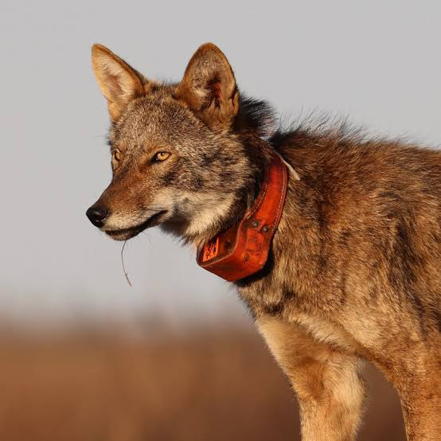
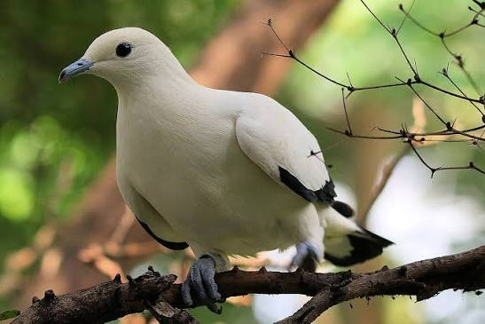
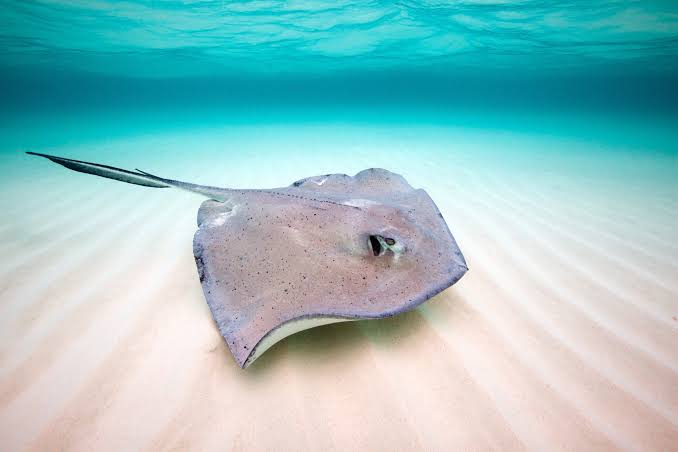
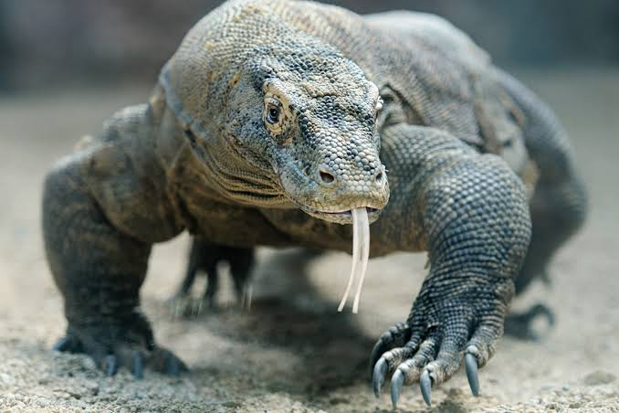

Donnan's Animal Dossiers
A list of animals and their information. Find one you like? Click on them to learn more!
Pick An Animal

Red Wolf

Pied Imperial Pigeon

Southern Stingray

A list of animals and their information. Find one you like? Click on them to learn more!




Pied imperial pigeon. (2021, December 1). Wikipedia. https://en.wikipedia.org/wiki/Pied_imperial_pigeon
Southern stingray. (2020, December 14). Wikipedia. https://en.wikipedia.org/wiki/Southern_stingray
Wikipedia Contributors. (2019, April 8). Komodo dragon. Wikipedia; Wikimedia Foundation. https://en.wikipedia.org/wiki/Komodo_dragon
Wikipedia Contributors. (2019, November 21). Red wolf. Wikipedia; Wikimedia Foundation. https://en.wikipedia.org/wiki/Red_wolf
A-Z-Animals.com. (2019). Red Wolf. A-Z-Animals.Com. https://a-z-animals.com/animals/red-wolf/
Mulheisen, M., & Csomos, R. A. (2014). Canis rufus (red wolf). Animal Diversity Web. https://animaldiversity.org/accounts/Canis_rufus/
Trefney, E., & Trefney, E. (2025, September 18). A Week to Remember for the Red Wolf. Rewilding. https://rewilding.org/a-week-to-remember-for-the-red-wolf/
Trefney, E., & Trefney, E. (2024, December 23). A Milestone in Red Wolf Country. Rewilding. https://rewilding.org/a-milestone-in-red-wolf-country/
Pied Imperial-Pigeon - eBird. (2026). Team_eBird. https://ebird.org/species/piipig1
Birds of Singapore. (2023). Pied Imperial Pigeon. Birds of Singapore. https://www.birds-of-singapore.org/pied-imperial-pigeon
Louisville Zoo. (2023). Pied Imperial Pigeon. Louisville Zoo. https://www.louisvillezoo.org/animals/pied-imperial-pigeon
Zoo Leipzig. (2023). Pied Imperial Pigeons: Meet them at Zoo Leipzig!. Zoo Leipzig. https://www.zoo-leipzig.de/en/animals/pied-imperial-pigeon
Toronto Zoo. (2023). Pied Imperial Pigeon. Toronto Zoo. https://www.torontozoo.com/animals/Pied%20imperial%20pigeon
Florida Museum of Natural History. (2023). Southern Stingray. Florida Museum of Natural History. https://www.floridamuseum.ufl.edu/discover-fish/species-profiles/southern-stingray/
Mulheisen, M., & Csomos, R. A. (2014). Dasyatis americana (southern stingray). Animal Diversity Web. https://animaldiversity.org/accounts/Dasyatis_americana/
Marine Sanctuary. (2023). Sea Wonder: Southern Stingray. Marine Sanctuary. https://marinesanctuary.org/blog/sea-wonder-southern-stingray/
Audubon Nature Institute. (2023). Southern Stingray. Audubon Nature Institute. https://audubonnatureinstitute.org/southern-stingray
Smithsonian’s National Zoo & Conservation Biology Institute. (2018, July 9). Komodo dragon. Smithsonian’s National Zoo. https://nationalzoo.si.edu/animals/komodo-dragon
Animal Kingdom Bio. (2023). Komodo Dragon. Animal Kingdom Bio. https://animal-kingdom-bio.fandom.com/wiki/Komodo_Dragon
Wikimedia Commons. (2023). Komodo_dragon_distribution.gif. Wikimedia Commons. https://commons.wikimedia.org/wiki/File:Komodo_dragon_distribution.gif
IELC. (2023). Komodo Dragon Behavior. IELC. https://ielc.libguides.com/sdzg/factsheets/komododragon/behavior
National Geographic Society. (2023). Komodo Dragon Facts. National Geographic. https://kids.nationalgeographic.com/animals/reptiles/facts/komodo-dragon
GoEco. (2023). 10 Facts About Komodo Dragons. GoEco. https://www.goeco.org/article/10-fact-about-komodo-dragons/1000/
{kind=link}